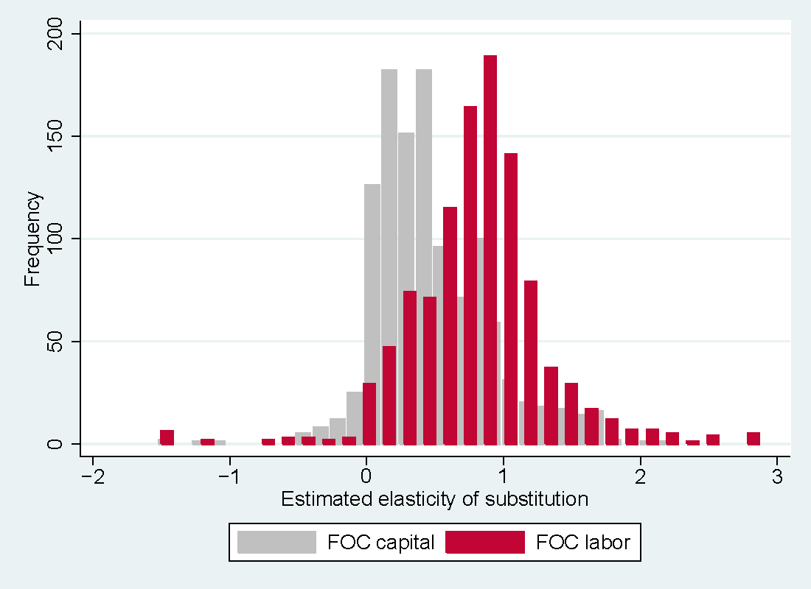

We show that the large elasticity of substitution between capital and labor estimated in the literature on average, 0.9, can be explained by three factors: publication bias, use of aggregated data, and omission of the first-order condition for capital. The mean elasticity conditional on the absence of publication bias, disaggregated data, and inclusion of information from the first-order condition for capital is 0.3. To obtain this result, we collect 3,186 estimates of the elasticity reported in 121 studies, codify 71 variables that reflect the context in which researchers produce their estimates, and address model uncertainty by Bayesian and frequentist model averaging. We employ nonlinear techniques to correct for publication bias, which is responsible for at least half of the overall reduction in the mean elasticity from 0.9 to 0.3. Our findings also suggest that a failure to normalize the production function leads to a substantial upward bias in the estimated elasticity. The weight of evidence accumulated in the empirical literature emphatically rejects the Cobb-Douglas specification.
Fig: Identification strategy drives the reported elasticities

Reference: Sebastian Gechert, Tomas Havranek, Zuzana Irsova, and Dominika Kolcunova (2022), "Measuring Capital-Labor Substitution: The Importance of Method Choices and Publication Bias." Review of Economic Dynamics 45, 55-82.